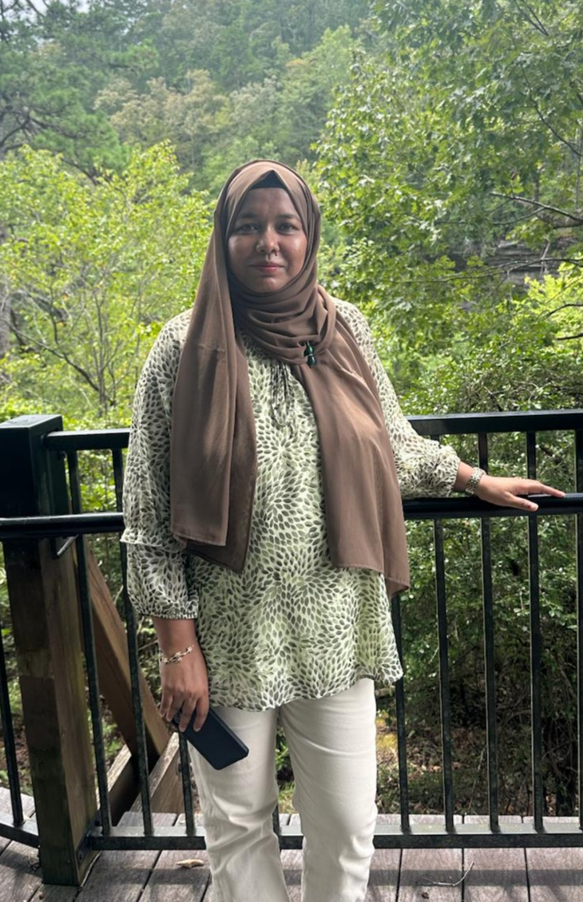

COMMUTATIVE ALGEBRA · POSITIVE CHARACTERISTIC
Maria Akter
Ph.D. Candidate in Mathematics
The University of Alabama
I study singularities through Frobenius methods, with an emphasis on F-signature, Frobenius splitting ratios, and the stability of F-singularities under perturbations.
My advisor is Thomas Polstra. I expect to complete my Ph.D. in May 2027.
01 / RESEARCH
Frobenius methods & singularities
My research lies in commutative algebra, primarily in positive characteristic. My broader interests include differential operators, Frobenius compatible filtrations, and their applications to singularities.
Publications and preprints
- Maria Akter: On m-adic Continuity of F-Splitting Ratio, arXiv preprint arXiv:2505.12174, submitted (2025).
- S. M. Atiqur Rahman Chowdhury, Ashish Barmon, Sharmin Alam, Maria Akter: Numerical Simulation that Provides Non-oscillatory Solutions for Porous Medium Equation and Error Approximation of Boussinesq’s Equation, Universal Journal of Computational Mathematics, 5(2), 25-33, 2017. DOI: 10.13189/ujcmj.2017.050203.
- Maria Akter, Salma Nasrin: Invariant Differential Operator on Homogeneous Space, International Journal of Mathematics and Computational Science, Vol. 3, No. 1, pp. 1-5, 2017.
- Maria Akter, Salma Nasrin: Symmetric Pair from Symmetric Space and Lie Group, Journal of Engineering Mathematics & Statistics, 2018.
Research in progress
- m-adic Stability of F-Singularities for F-Graded SystemsWith Anna Brosowsky · Manuscript in preparation
- Monotonicity of F-Signature under PerturbationsWith Thomas Polstra
- Differential Operators and Frobenius IndecomposabilityWith Thomas Polstra and Hongyu Luo
- Frobenius Maps, Filtrations, and Birational ModulesWith Thomas Polstra
02 / TEACHING
In the classroom
My teaching experience spans undergraduate mathematics at the University of Alabama and universities in Bangladesh, including calculus, linear algebra, and differential equations.
Courses taught and instructional roles
University of Alabama
- Math 238 – Applied Differential Equations I, Fall 2025.
- Math 110 – Finite Mathematics, Summer 2025.
- Math 237 – Linear Algebra, Spring 2025.
- Math 572 – Linear Algebra (Grader and Assistant Instructor), Fall 2024.
- Math 238 – Applied Differential Equations I, Spring 2024.
- Math 126 – Calculus II, Fall 2023.
- Math 125 – Calculus I, Spring 2022.
- Math 115 – Precalculus and Trigonometry, Fall 2022.
BUET
January 2015
- Math 111 – Mathematics I
- Math 141 – Calculus I
- Math 243 – Advanced Calculus
- Math 235 – Vector Analysis and Statistics
- Math 263 – Complex Variables, Harmonic Analysis and PDE
- Math 133 – Matrices and Coordinate Geometry
January 2016
- Math 113 – Calculus
- Math 161 – Differential Calculus, Solid Geometry and Vectors
- Math 141 – Calculus I
- Math 121 – Calculus
- Math 191 – Differential and Integral Calculus
- Math 137 – Differential and Integral Calculus, Matrices
January 2017
- Math 113 – Calculus
- Math 145 – Linear Algebra
- Math 231 – Differential Equations
- Math 237 – Laplace Transform and Vector Analysis
- Math 121 – Calculus
January 2019
- Math 213 – Differential Equations
- Math 161 – Differential Calculus, Solid Geometry and Vectors
- Math 271 – PDE and Vector Analysis
- Math 171 – Calculus and Ordinary Differential Equations
July 2019
- Math 191 – Differential and Integral Calculus
- Math 161 – Differential Calculus, Solid Geometry and Vectors
- Math 283 – Statistics, PDE and Matrices
- Math 257 – Ordinary and Partial Differential Equations
BRAC University
- Math 123 – Calculus I, Summer & Fall 2014
- Math 121 – Basic Algebra, Summer & Fall 2014
- Math 211 – Calculus II, Summer & Fall 2014
United International University
- Math 134 – Calculus I, Summer 2013
- Math 121 – Basic Algebra, Summer 2013
Sonargaon University
- Math 167 – Integral Calculus I, Fall 2016 & Spring 2017
- Math 144 – Matrices, Fall 2017
03 / TALKS
Talks & presentations
- Joint Mathematics Meetings, ChicagoSpecial Session on Homological Methods, Syzygies, and Resolutions in Commutative Algebra · Scheduled
- Syracuse UniversityAlgebra Seminar
- University of Nebraska–LincolnURICA Conference
- North Dakota State University, FargoAMS Sectional Meeting
- University of UtahCommutative Algebra Seminar
- University of Nebraska–LincolnCommutative Algebra Seminar and CARS
- Auburn UniversityAlgebra Seminar
- The University of AlabamaAlgebra/Topology Seminar
- University of Nebraska–LincolnSummer Camp · Short talk
- Georgia State UniversityCATS Conference
- Fields Institute, TorontoWICA Conference · Short talk
- University of MinnesotaGEMS Conference · Short talk
Poster presentations
- On m-adic Continuity of F-Splitting Ratio — KUMUNU, University of Missouri, Columbia, Oct. 2025; CATS, Georgia State University, Apr. 2025; WICA, Fields Institute, Mar. 2025.
- On Inversion of Adjunction of Splitting Dimensions — SLAM, University of Oklahoma, Feb. 2024.
04 / BACKGROUND
Education & appointments
Education
- Ph.D. in MathematicsThe University of Alabama · Present
Advisor: Thomas Polstra - M.Phil. in MathematicsBUET · 2019
- M.Sc. in Pure MathematicsUniversity of Dhaka · 2013
- B.Sc. in MathematicsUniversity of Dhaka · 2011
Academic appointments
- The University of AlabamaGraduate Research Assistant · May 2026–present
Graduate Teaching Assistant · Jan. 2022–Apr. 2026 - BUETAssistant Professor · June 2018–present
Lecturer · Feb. 2015–May 2018 - Earlier teaching appointmentsSonargaon University · 2016–2017
BRAC University · 2014–2015
United International University · 2013
Selected honors & fellowships
- Outstanding Research by a Ph.D. Student Award, The University of Alabama, 2026.
- Henry Miller Fellowship, Fall 2026 and Spring 2027.
- Hasell Palmer Scholarship, Fall 2026–Spring 2027 and Fall 2025–Spring 2026.
- Lucretia Anne Dehaney Endowed Scholarship, 2024.
- Highest GPA Award in the Third Year of Undergraduate Study, University of Dhaka, 2010.
05 / COMMUNITY
Service & mathematical community
Co-organizer of the AMS Special Session on Recent Developments in Commutative Algebra at the University of Alabama at Birmingham, 2027 (scheduled), with Thomas Polstra and Anna Brosowsky.
I also co-organized undergraduate mathematics olympiads at BUET in 2017, 2018, and 2019, and served as Secretary of BUGS in 2021.
Professional memberships & development
Association for Women in Mathematics (since 2022); Association of Bangladeshi Women in Mathematics (since 2021); life member of BUET Mathematics Alumni Association, DUMAA, and Bangladesh Mathematical Society.
Selected professional development includes the University of Nebraska–Lincoln Summer Camp (2025), Recent Trends in Commutative Algebra at the Fields Institute (2025), Recent Developments in Commutative Algebra at SLMath (2024), and teaching workshops at BUET and BRAC University.
GET IN TOUCH
Let’s connect.
Department of Mathematics
The University of Alabama · Tuscaloosa, Alabama, USA
Office: Gordon Palmer Hall, Room 217A